Aranyosi Dombi Udvarház, Poroszló – Tanyánktól az asztalig.
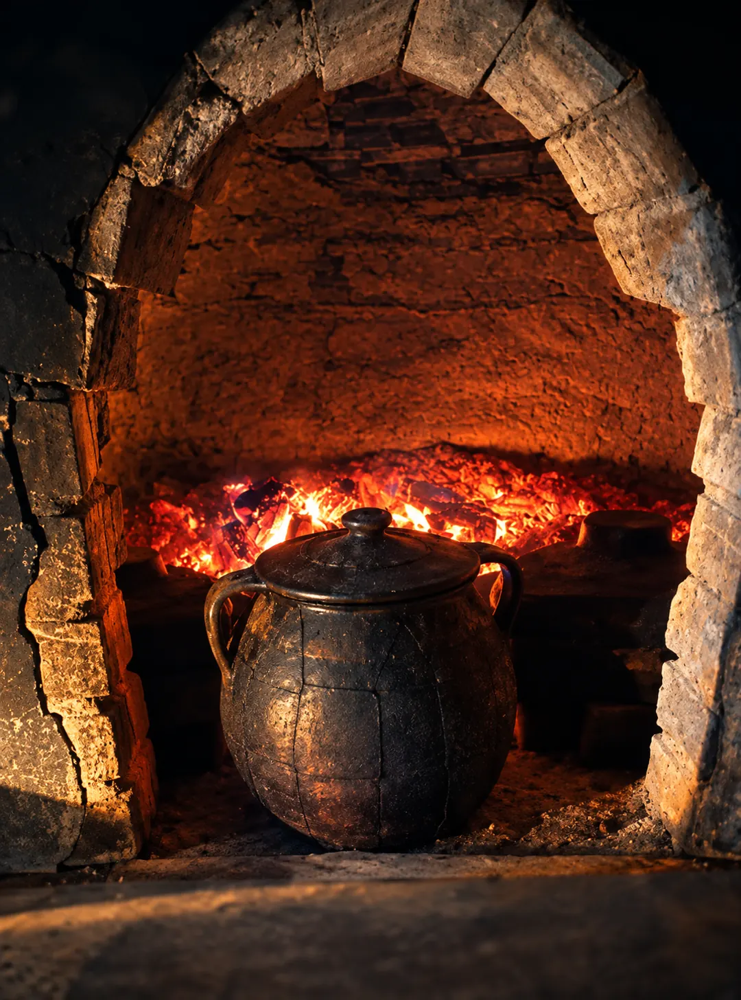
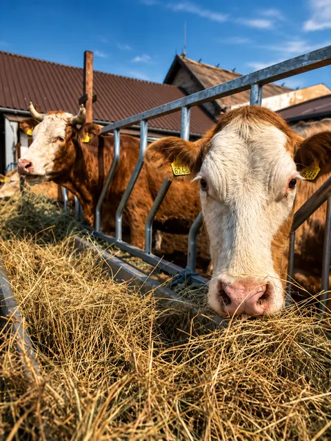
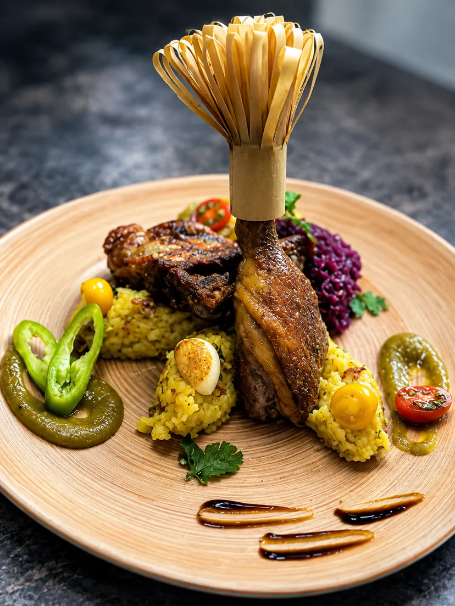
Családi étterem Poroszlón. Magyaros, házias ételek, amelyekhez az alapanyagok egy részét a saját gazdaságunkban termeljük meg.
-
01
A tanya
Családi gazdaság 1997 óta, Poroszló külterületén. Innen érkezik az alapanyagok egy része.
-
02
A konyha
Két kemence és melegkonyha. Tradicionálisan magyar ételek, a mai kor ízléséhez igazítva.
-
03
Az asztal
Magyaros, házias fogások: az állandó étlap mellett a napi táblán az aznap készült ételek.
Egy tanyából lett vendéglő
Azért nyitottuk meg az Udvarházat, hogy a Tisza-tó vidékének nyugalmához illő helyet adjunk mindenkinek, aki itt él, erre jár vagy nálunk pihen meg.
Ugyanúgy szívesen látjuk a nagycsaládokat és a kerékpárosokat, mint azokat, akik szűk körű ünnepet tartanának különleges menüsorral. A gyerekeket az udvaron játszóház és sok felfedeznivaló várja.
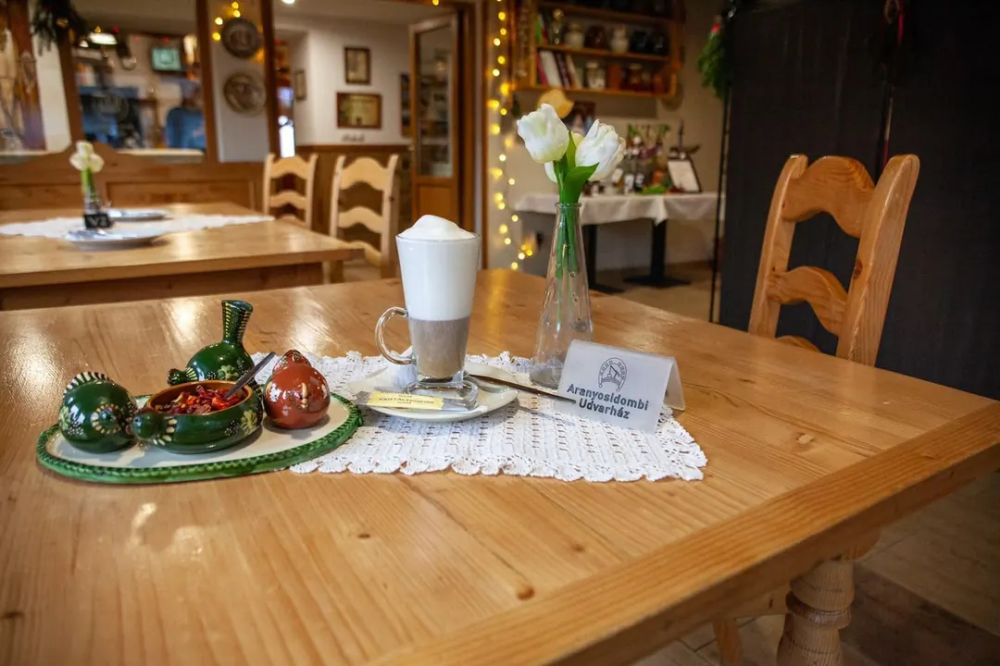
-
1997
Az Aranyosidomb Lovastanya
Családi vállalkozásként indult, állat- és növénytermesztéssel, Poroszló külterületén, Borsodivánka felé.
-
2006
Kiköltözés a tanyára
A család kiköltözött a tanyára, a régi építésű családi ház pedig lassan új életet kapott.
-
2012
Megnyílik az Udvarház
Eleinte kávézóként működött. Aztán épült egy kemence, és kemencés portával bővült az Udvarház.
-
Ma
Két kemence, melegkonyhás étterem
Házi szörpök, magyaros ételek, kemencében sült finomságok, egyedi hangulat.

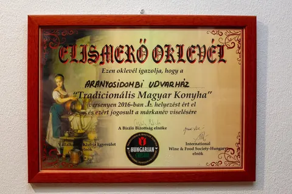
Elismerés · 2016
„Tradicionális Magyar Konyha”
A versenyen elért helyezésért jogosultak vagyunk a márkanév viselésére.
Akik a tanyán élnek
Néhány lakó a család gazdaságából, ahonnan az alapanyagok egy része érkezik. Fotók a Facebook-oldalunkról.
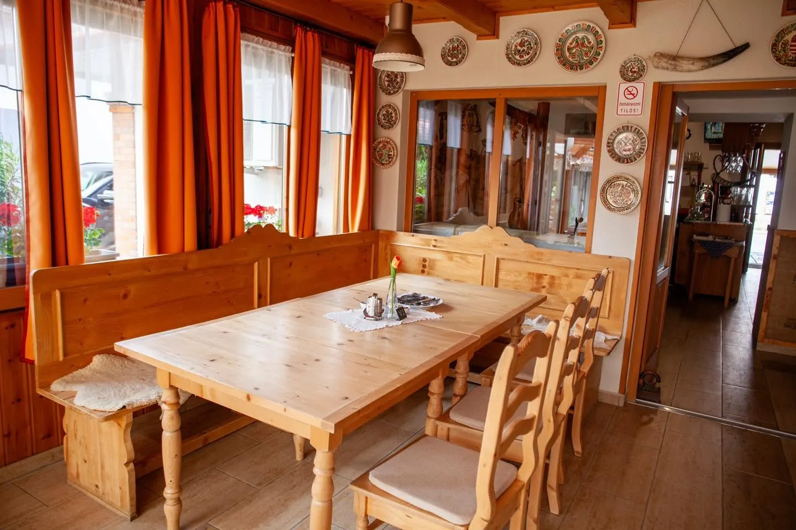
„Halat, vadat s mi jó falat szem-szájnak ingere”
Hagyományos ízek, mai konyha
Hagyományos magyar ételeket főzünk, mai ízléssel. A konyha helyi alapanyagokra épül, és a legfontosabb beszállítónk a saját családi gazdaságunk.
- Saját gazdaság
- Friss, szezonális termékek a családi gazdaságból; a libák és a birkák saját nevelésűek.
- Két kemence
- A kávézóként indult Udvarház kemencés portával bővült. Ma két kemencében és melegkonyhán főzünk.
- Napi tábla
- Az állandó étlap mellett a táblán mindig az aznap készült ételek szerepelnek.
- Magyar alapanyag
- Magyar élelmiszert használunk, és kistermelőktől szerzünk be.
A konyhánkból
Fogások, amelyeket a Facebookon mutattunk meg. A kínálat az évszakkal változik.
-
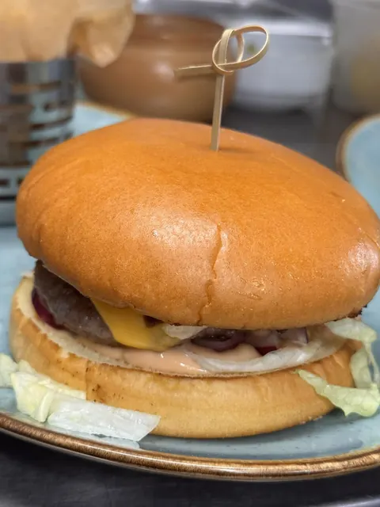
Kínálatunkból
Dombi Burger
Marhahúspogácsa, lilahagyma-lekvár, koktélszósz, cheddar, friss zöldségek.
-
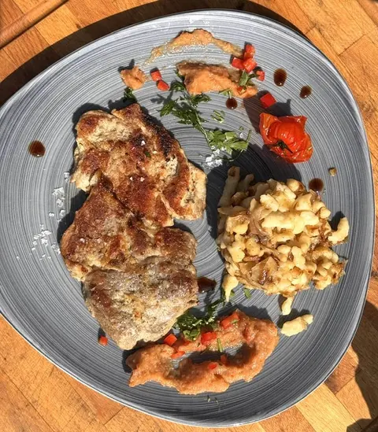
A napi tábláról
Káposztás sztrapacska
Fokhagymás sertésszelettel és birs chutney-val.
-
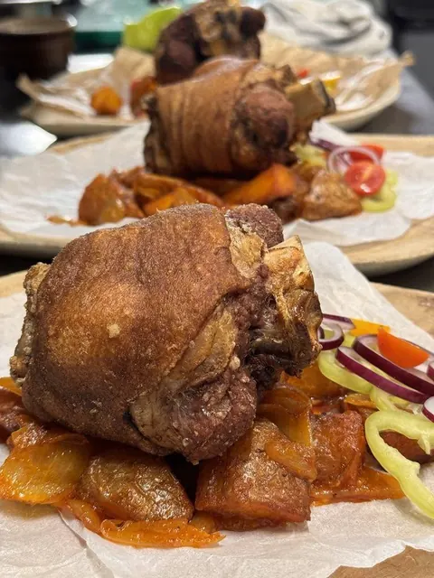
Házias
Ropogós csülök
Kiadós, házias fogás, ropogósra sütve.
-
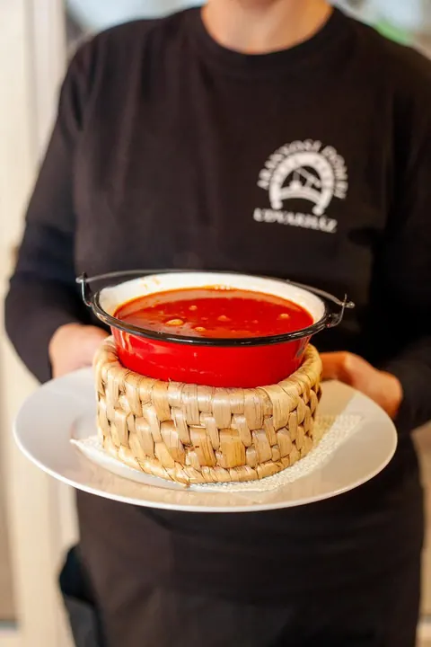
A Tisza mellől
Tiszai halászlé
„Hamisítatlan tiszai halászlé!” Bográcsban tálalva.
Állandó étlap és napi tábla
Kínálatunk folyamatosan megújul. Az aktuális ételekről a táblákon és a kollégáinktól tájékozódhat.
Mivel az árak változnak, étlapot nem teszünk közzé online. Az aktuális árakról telefonon szívesen tájékoztatjuk.
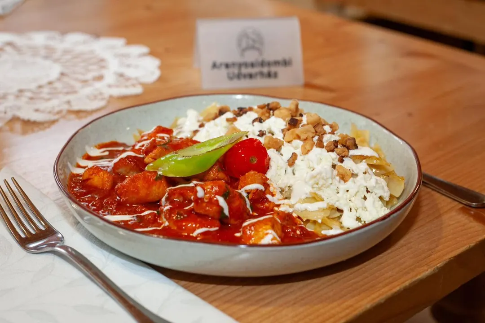
Hasznos tudnivalók
-
Frissen, rendelésre főzünk
Ételeink többsége a rendelés után, frissen készül. Telt házas időszakban ezért kicsit hosszabb lehet a várakozás. Köszönjük a türelmét.
-
Allergének
Ételallergia vagy -érzékenység esetén kérjük, rendelés előtt jelezze kollégáinknak: részletesen tájékoztatják az ételek allergéntartalmáról.
-
Külön fizetés
Ha a társaság tagjai külön fizetnének, kérjük, ezt a rendelés leadásakor jelezzék. Utólag a számlát nem tudjuk megbontani.
-
Fél adag, gyermekadag
Fél adag és gyermekadag esetén a teljes adag árának 70%-át számoljuk fel, mivel az elkészítése ugyanannyi munkával jár.
-
Becsomagoljuk
A megmaradt ételt szívesen becsomagoljuk. A dobozért csak a beszerzési árát számoljuk fel (100–500 Ft).
-
Árak és szervizdíj
Áraink forintban értendők, és tartalmazzák az áfát. A számla végösszege 10% szervizdíjat tartalmaz.
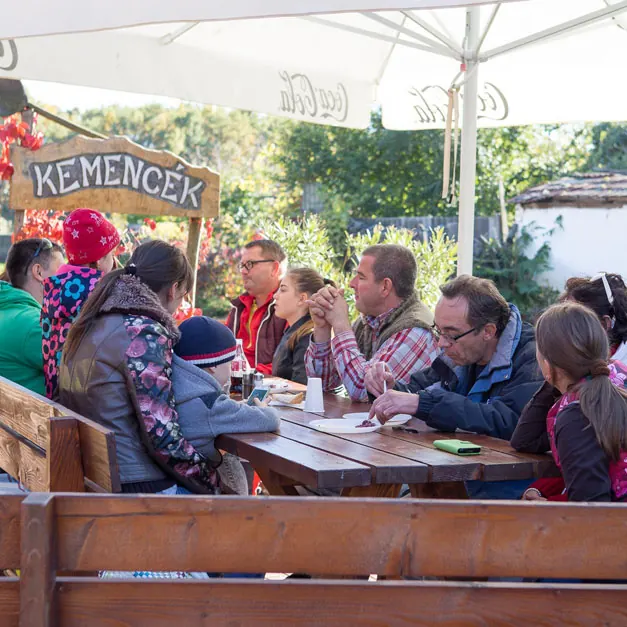
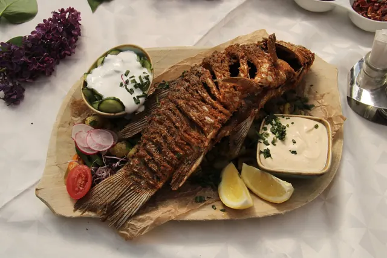
Családi ebédtől a nagy ünneplésig
Családi ebéd, baráti összejövetel vagy egy különleges menüsorral megünnepelt bensőséges esemény: az étterem 40 fős, a terasszal és a csűrrel együtt közel 100 vendéget tudunk fogadni.
- Étterem: 40 fő
- Terasz
- Csűr
- Két kemence
- Játszóház az udvaron
- Elvitel
A birkapörköltet saját nevelésű állataink húsából, előrendelésre, rendezvényekre is elkészítjük. Csoportos vagy rendezvényes igénnyel keressen minket telefonon vagy e-mailben.


Várjuk Poroszlón, a Fő úton
Őszi nyitvatartás 2026
| Hétfő ma | zárva |
|---|---|
| Kedd ma | zárva |
| Szerda ma | 11:30–19:00 |
| Csütörtök ma | 11:30–19:00 |
| Péntek ma | 11:30–20:00 |
| Szombat ma | 11:30–20:00 |
| Vasárnap ma | 11:30–19:00 |
Előzetes asztalfoglalás erősen ajánlott. Ünnepnapi és szezonális eltéréseket a Facebook-oldalunkon jelzünk.
-
Cím
3388 Poroszló, Fő út 24. Útvonaltervezés -
E-mail
info@aranyosidomb.hu -
Fizetés
Bankkártya: Mastercard, Visa
- Asztalfoglalás telefonon E-mailben
3388 Poroszló, Fő út 24.
A térképet a Google Maps szolgáltatja; betöltéskor adatok jutnak a Google-höz.
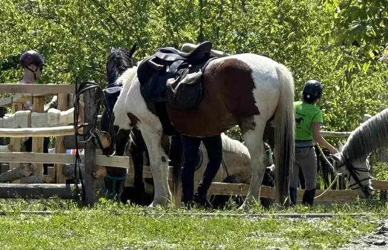
A gazdaság
Aranyosidomb Lovastanya
Poroszló külterületén, Borsodivánka felé. Innen érkezik az alapanyagok egy része.